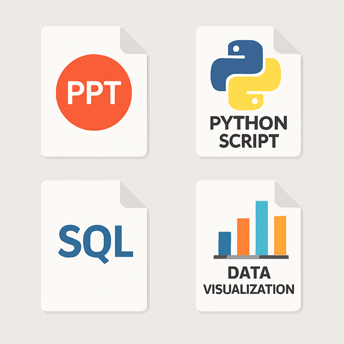

Intensive Bootcamp Batch 21-B3
MySkill Data Analyst Certification
Final project deliverables and case studies demonstrating core analytical proficiencies: relational SQL queries, automated Python data pipelines, and executive KPI dashboards.
Database & SQL

SQL Query & Data Preparation
Structured database queries, complex table joins, dataset normalization, and analytical SQL scripts for business intelligence and reporting.
Python Automation

Python Scripting & Analytics
Automated data processing scripts, YouTube channel performance extraction, and statistical calculation pipelines built with Python.
Business Intelligence

Analytics Performance Dashboard
Interactive visualization dashboard transforming raw dataset metrics into clear visual KPI summaries, performance trends, and business intelligence reports.